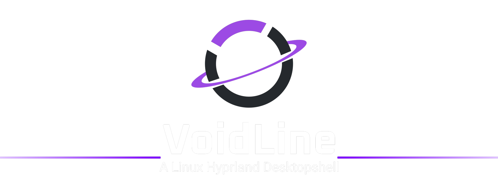

Connected panels
A desktop bar and orientation-aware panels that share one visual language.
Linux desktop shell / Hyprland
An experimental open-source desktop shell that brings panels, settings, notifications, native tools, and daily controls into one connected experience around Hyprland.

Voidline sits around Hyprland rather than replacing it. The goal is to make everyday desktop controls feel consistent while keeping the setup open, inspectable, and adaptable.
A desktop bar and orientation-aware panels that share one visual language.
Quick settings for network, Bluetooth, audio, power, display, and session actions.
A unified settings surface for personal, display, connection, and system options.
Integrated notifications and system tray behavior designed to feel part of the shell.
A matching lock screen and SDDM theme for a more continuous experience.
A Rust backend, the voidlinectl CLI, and a native terminal support the interface.
These screenshots come from the current development build and show how Voidline brings system controls and settings into the same visual system.


This video records an earlier showcase state. It remains useful as project history, but the screenshots above and the GitHub repository represent the newer build.
Project history / YouTube
A recorded look at how the shell’s visual direction and interactions were being explored before the current 0.3.0dev build.
Open on YouTube ↗Voidline currently targets Arch Linux with Hyprland. Review the repository requirements, back up existing configuration, and run the installer as your regular user rather than with sudo.
git clone --branch v0.3.0dev --depth 1 https://github.com/ShadowOkami4/voidline.gitcd voidline./install.sh --install-depsOpen source / In development
Explore the current source, report what you find, or join the Discord community to follow development and share feedback.